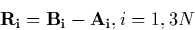
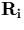
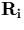

|  | (43) |
The atoms are then moved a fraction  along this vector, where
along this vector, where
 =0 corresponds to structure A,
=0 corresponds to structure A,  =1 corresponds to
structure B. The atoms are allowed to relax using a conjugate
gradient algorithm at each point, subject to the constraint that on
each iteration the total system relaxation vector must be orthogonal
to . If only one atom is moving then this is equivalent to
allowing the atom to relax in a plane perpendicular to its direction
of movement.
=1 corresponds to
structure B. The atoms are allowed to relax using a conjugate
gradient algorithm at each point, subject to the constraint that on
each iteration the total system relaxation vector must be orthogonal
to . If only one atom is moving then this is equivalent to
allowing the atom to relax in a plane perpendicular to its direction
of movement.
This method is simple to implement but can sometimes result in a system that is overconstrained; it tends to be best for systems where the diffusion motion primarily involves a single atom [152]. In particular when examining compound motion such as the oxygen dimer this method will only sample diffusion paths where both atoms are moving simultaneously, which need not be the lowest energy diffusion mechanism.
Therefore although initial investigations were performed with this method, we later switched to a second, bond-length constraint method detailed in the following section.